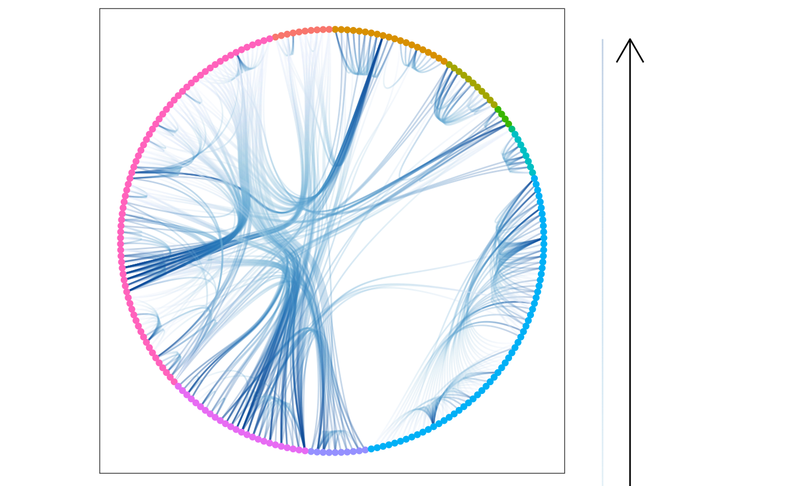

R/geom_conn_bundle.R
geom_conn_bundle.RdHierarchical edge bundling is a technique to introduce some order into the hairball structure that can appear when there's a lot of overplotting and edge crossing in a network plot. The concept requires that the network has an intrinsic hierarchical structure that defines the layout but is not shown. Connections between points (that is, not edges) are then drawn so that they loosely follows the underlying hierarchical structure. This results in a flow-like structure where lines that partly move in the same direction will be bundled together.
geom_conn_bundle(
mapping = NULL,
data = get_con(),
position = "identity",
arrow = NULL,
lineend = "butt",
show.legend = NA,
n = 100,
tension = 0.8,
...
)
geom_conn_bundle2(
mapping = NULL,
data = get_con(),
position = "identity",
arrow = NULL,
lineend = "butt",
show.legend = NA,
n = 100,
tension = 0.8,
...
)
geom_conn_bundle0(
mapping = NULL,
data = get_con(),
position = "identity",
arrow = NULL,
lineend = "butt",
show.legend = NA,
tension = 0.8,
...
)Set of aesthetic mappings created by ggplot2::aes()
or ggplot2::aes_(). By default x, y, xend, yend, group and
circular are mapped to x, y, xend, yend, edge.id and circular in the edge
data.
The result of a call to get_con()
A position adjustment to use on the data for this layer. This
can be used in various ways, including to prevent overplotting and
improving the display. The position argument accepts the following:
The result of calling a position function, such as position_jitter().
This method allows for passing extra arguments to the position.
A string naming the position adjustment. To give the position as a
string, strip the function name of the position_ prefix. For example,
to use position_jitter(), give the position as "jitter".
For more information and other ways to specify the position, see the layer position documentation.
Arrow specification, as created by grid::arrow().
Line end style (round, butt, square).
logical. Should this layer be included in the legends?
NA, the default, includes if any aesthetics are mapped.
FALSE never includes, and TRUE always includes.
It can also be a named logical vector to finely select the aesthetics to
display. To include legend keys for all levels, even
when no data exists, use TRUE. If NA, all levels are shown in legend,
but unobserved levels are omitted.
The number of points to create along the path.
How "loose" should the bundles be. 1 will give very tight bundles, while 0 will turn of bundling completely and give straight lines. Defaults to 0.8
Other arguments passed on to layer()'s params argument. These
arguments broadly fall into one of 4 categories below. Notably, further
arguments to the position argument, or aesthetics that are required
can not be passed through .... Unknown arguments that are not part
of the 4 categories below are ignored.
Static aesthetics that are not mapped to a scale, but are at a fixed
value and apply to the layer as a whole. For example, colour = "red"
or linewidth = 3. The geom's documentation has an Aesthetics
section that lists the available options. The 'required' aesthetics
cannot be passed on to the params. Please note that while passing
unmapped aesthetics as vectors is technically possible, the order and
required length is not guaranteed to be parallel to the input data.
When constructing a layer using
a stat_*() function, the ... argument can be used to pass on
parameters to the geom part of the layer. An example of this is
stat_density(geom = "area", outline.type = "both"). The geom's
documentation lists which parameters it can accept.
Inversely, when constructing a layer using a
geom_*() function, the ... argument can be used to pass on parameters
to the stat part of the layer. An example of this is
geom_area(stat = "density", adjust = 0.5). The stat's documentation
lists which parameters it can accept.
The key_glyph argument of layer() may also be passed on through
.... This can be one of the functions described as
key glyphs, to change the display of the layer in the legend.
In order to avoid excessive typing edge aesthetic names are
automatically expanded. Because of this it is not necessary to write
edge_colour within the aes() call as colour will
automatically be renamed appropriately.
geom_conn_bundle* understands the following aesthetics. Bold aesthetics are automatically set, but can be overwritten.
x
y
group
circular
edge_colour
edge_width
edge_linetype
edge_alpha
filter
The position along the path (not computed for the *0 version)
Holten, D. (2006). Hierarchical edge bundles: visualization of adjacency relations in hierarchical data. IEEE Transactions on Visualization and Computer Graphics, 12(5), 741-748. doi:10.1109/TVCG.2006.147
# Create a graph of the flare class system
library(tidygraph)
flareGraph <- tbl_graph(flare$vertices, flare$edges) %>%
mutate(
class = map_bfs_chr(node_is_root(), .f = function(node, dist, path, ...) {
if (dist <= 1) {
return(shortName[node])
}
path$result[[nrow(path)]]
})
)
importFrom <- match(flare$imports$from, flare$vertices$name)
importTo <- match(flare$imports$to, flare$vertices$name)
# Use class inheritance for layout but plot class imports as bundles
ggraph(flareGraph, 'dendrogram', circular = TRUE) +
geom_conn_bundle(aes(colour = after_stat(index)),
data = get_con(importFrom, importTo),
edge_alpha = 0.25
) +
geom_node_point(aes(filter = leaf, colour = class)) +
scale_edge_colour_distiller('', direction = 1, guide = 'edge_direction') +
coord_fixed() +
ggforce::theme_no_axes()
